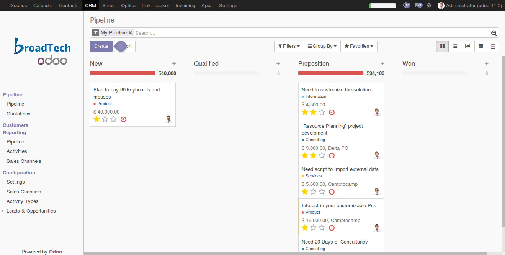

<section class="oe_container oe_dark">
	<div class="oe_row oe_spaced">
        <div class="oe_span12">
            <h2 class="oe_slogan text-center">Comfy Search/ Filter Box</h2>
        </div>
        <div class="oe_span12">
            <div class="oe_span12 text-justify">
                
            </div>
        </div>
        <div class="oe_span12">
            <p class='oe_mt32 text-justify'>
            Widens the search filter box. Thus helps to make the search/ filter more comfortable to its users.</p>
        </div>
    </div>
</section>
